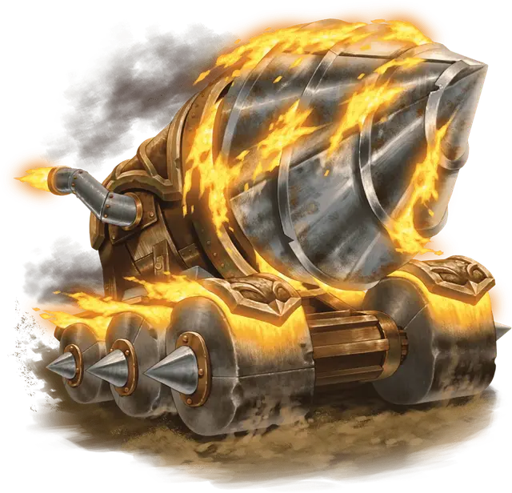

Дьявольский шнек
Fiendish Auger
Огромный Конструкт, нейтрально-злой

Класс Доспеха 15
Хиты 85 (9к12 + 27)
Скорость 40 футов, копая 30 футов
| мод | спас | ||
|---|---|---|---|
| СИЛ | 23 | +6 | +6 |
| ЛОВ | 10 | +0 | +0 |
| ТЕЛ | 17 | +3 | +3 |
| мод | спас | ||
|---|---|---|---|
| ИНТ | 6 | −2 | −2 |
| МДР | 12 | +1 | +1 |
| ХАР | 5 | −3 | −3 |
Иммунитет к урону огонь, яд
Иммунитет к состояниям бессознательность, испуг, истощение, окаменение, ослепление, отравление, очарование, паралич
Чувства слепое зрение 60 футов (слеп за пределами этого радиуса), пассивное Восприятие 11
Опасность 5 (1800 опыта)
Бонус мастерства +3
Особенности
Осадный монстр. Шнек наносит двойной урон объектам и зданиям.
Прокладывание туннеля. Шнек может копать сквозь сплошной камень со скоростью копания, уменьшенной вдвое, оставляя за собой туннель шириной 10 футов.
Действия
Пламенная дрель. Рукопашная атака оружием: +9 к попаданию, досягаемость 5 футов, одна цель. Попадание: 17 (2к10 + 6) колющего урона плюс 7 (2к6) урона огнём. Если шнек перемещается как минимум на 20 футов по прямой к цели непосредственно перед попаданием, цель получает дополнительные 11 (2к10) колющего урона, а если цель — существо, она должна преуспеть в спасброске Силы Сл 17 или будет сбито с ног.
Бонусные действия
Взрыв жара (перезарядка 5–6). Шнек выпускает интенсивный выброс жара в сфере радиусом 30 футов с центром вокруг себя. Этот жар распространяется по углам. Каждое существо в этой области должно совершить спасбросок Телосложения Сл 17, получая 13 (3к8) урона огнём при провале или половину этого урона при успехе.
Описание
Дьявольский шнек создается, когда злой дух входит в буровую установку, заставляя огромное отверстие штопора ярко светиться адским пламенем.
Подпитываемые пылкой агрессией внутреннего злого духа, дьявольские шнеки могут быстро пробивать твердую породу. Однако те, кто использует дьявольский шнек, должны внимательно следить за машиной. Без тщательного обучения дьявольский шнек без разбора пронзает как живое существо, так и землю.